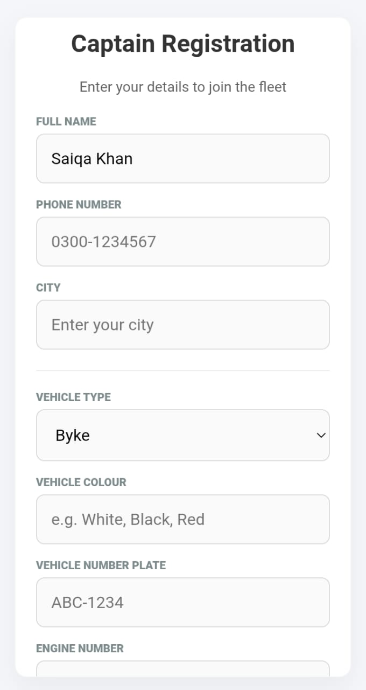
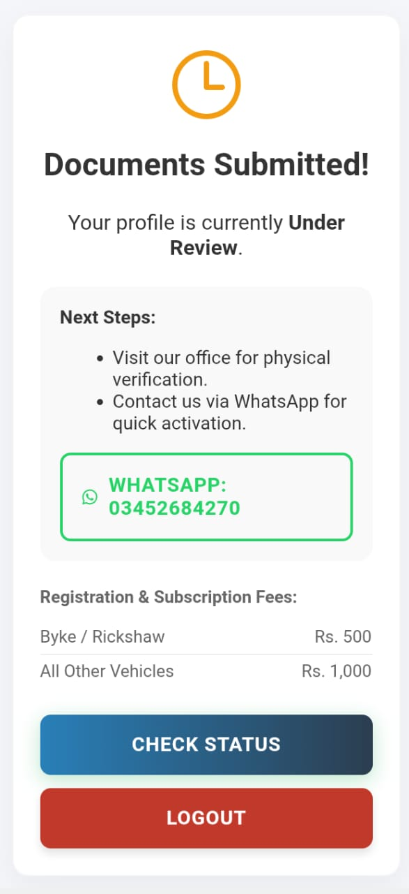
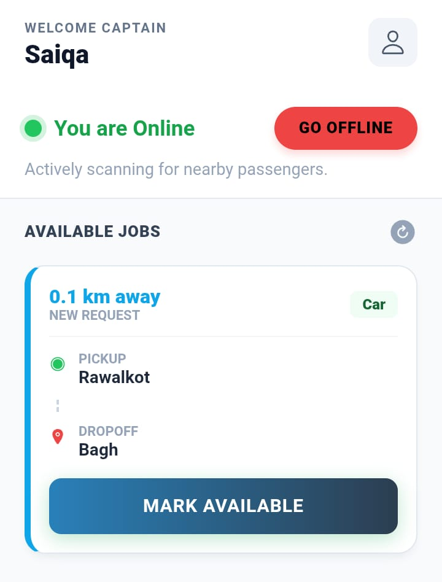

Drivers register their Name, Mobile, and complete Vehicle details. They must be manually verified by our team before going active.
Once a rider requests a ride, our backend algorithms instantly scan a 15-kilometer radius to find active, verified drivers with matching vehicle types.
Relevant drivers immediately see the ride request on their screens, including the pickup point, drop point, and total distance to the passenger.


